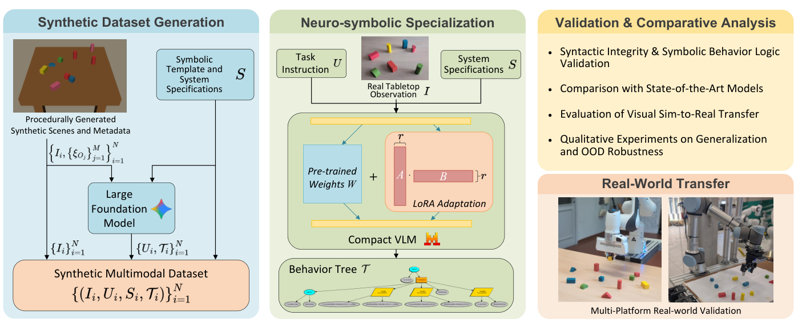
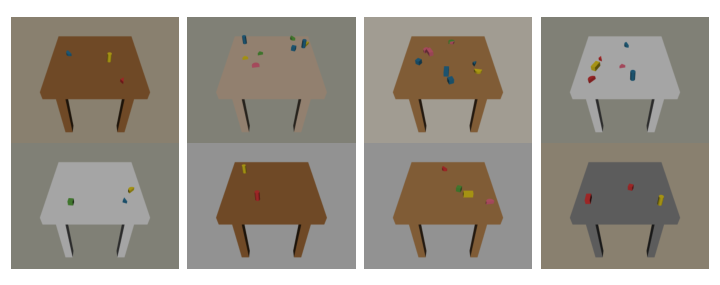
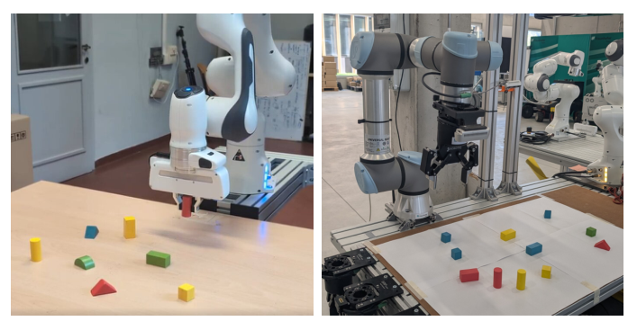
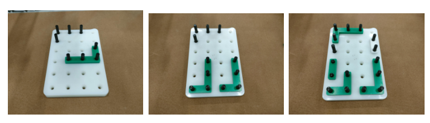
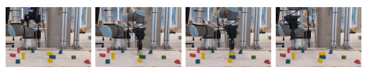

神经符号
行为树合成
合成数据
Sim-to-Real
arXiv 2604.02812 · 2026-04
Learning Structured Robot Policies from Vision-Language Models via Synthetic Neuro-Symbolic Supervision
用合成神经符号监督，把 VLM 特化为可生成结构化机器人策略（行为树）的控制器
Alessandro Adami, Tommaso Tubaldo, Marco Todescato, Ruggero Carli, Pietro Falco · University of Padova / Fraunhofer Italia / Polytechnic of Bari
一句话总结：端到端 VLA 是黑盒，难验证、难做反应式恢复；经典结构化策略（行为树）可解释但难以从感知自动生成。本文用两阶段纯合成流水线——MuJoCo 域随机化生成 10,000 个场景，再由 Gemini 3 Flash 生成"指令 ↔ 行为树"配对——零真实世界数据地微调一个 Pixtral-12B（LoRA），让它从视觉观测 + 指令 + 系统规约直接合成可执行、可验证、反应式的 JSON 行为树，并在 Franka Panda 与 UR5e 两台异构机械臂上零样本迁移成功。
01摘要解读
VLM 虽能把多模态观测映射到机器人行为，但主流端到端 visuomotor 策略不透明、难分析，限制了真实部署；而经典系统依赖的结构化策略表示可解释、模块化、能反应式执行。本文研究如何把基础模型特化为生成接地于多模态感知的结构化策略，在高维学习与符号控制之间架桥。
核心是一个神经符号方法：VLM 从视觉观测、自然语言指令、结构化系统规约中合成可执行行为树（BT）。为获得可扩展的监督信号（无需人工标注），引入自动流水线，生成域随机化场景 + 基础模型产出的"指令-策略"配对的合成多模态数据集。通过把"约束符号语法下的结构化任务分解"与"硬件特定的电机控制"解耦，证明一个 12B 模型仅靠 in-silico 监督就能学到合成 BT 所需的结构化空间-符号映射。两台异构机械臂上的真机实验确认：这些结构约束的策略能零样本迁移到真实环境。
Pixtral-12B
LoRA 微调的开源 VLM（可边缘部署）
2 平台
Franka Panda（7-DOF）+ UR5e（6-DOF）
02研究背景与动机（Introduction）
数据稀缺是根本瓶颈
VLM/VLA 在观测→动作上表现出色，但被数据稀缺卡死：收集高质量人工标注机器人示范昂贵、不可扩展，且往往缺乏鲁棒任务规划所需的逻辑多样性。本文的答案是：能否完全从合成神经符号监督中学习结构化策略？
四个具体瓶颈
- P1 感知与规划解耦：传统系统把视觉特征提取与逻辑推理分离，误差传播、延迟高；
- P2 启发式不一致：通用模型难遵守严格机器人协议（如无碰撞轨迹必需的 z 偏移）；
- P3 执行脆弱：线性动作序列缺乏 BT 固有的反应性，无法从扰动中自主恢复；
- P4 计算不透明：依赖专有高参数模型，限制了可复现性与边缘实时部署。
从"text-to-BT"到"vision-to-BT"
早期 LLM 生成 BT 的工作（LLM-BRAIN 等）聚焦语言的"任务→树"映射，缺少视觉接地，依赖预解析的物体列表。本文桥接这一 gap：直接用视觉观测合成 BT，省去单独的符号感知流水线。相比 [18] 用真实机器人数据蒸馏监督（仍依赖 recorded real-world data），本文做到零真实样本。
三大贡献
- 可扩展合成监督：自动流水线生成大规模多模态数据集，无需真实采集，保证视觉-语言-策略间逻辑与语法一致；
- 神经符号特化：用 LoRA 微调中型 VLM，输出结构化符号策略，把反应式防护、符号空间偏移等架构约束内化为安全约束；
- 零真实数据验证：零真实样本训练的模型，在结构化任务规划上与人工 prompt 的 SOTA 模型性能持平。

图 1：框架总览。高保真仿真程序化生成域随机化合成场景与元数据 → 大基础模型转成"指令 + 可执行 BT"监督数据集 → 微调 12B VLM 做约束符号策略合成；推理时接收真实观测 + 指令 + 系统规约，输出可解释、反应式的 BT 策略。
03方法详解
3.1 问题形式化
合成任务定义为映射 f_θ : I × U × S → Π：RGB 观测 I、自然语言指令 U、结构化系统规约 S（原语库 + 安全约束 + 动态物体元数据）映射到所有合法 BT 的集合 Π。生成的 BT 若满足 JSON-BT 形式语法则结构健全，若计算参数与 I 中物体空间分布对齐则行为接地。关键设定：物体位姿 ξ_O 是动态标签（物体被移动时元数据更新，BT 引用符号标签而非硬编码坐标仍保持有效）。
3.2 原子原语库（硬件无关的抽象层）
| 原语 | 类型 | 功能 |
|---|
| MovePose / MoveDown | Action | 末端移到 6D 目标位姿 / 竖直下移 |
| OpenGripper / CloseGripper | Action | 全开 / 闭合夹爪 |
| is_at_pose / is_grasped / is_contact / is_at_home | Condition | 位姿 / 抓取 / 力接触 / 归位检查 |
把输出空间降到有限原语集，降低了生成复杂度，让 12B 模型能对标更大的闭源模型。
3.3 三类形式结构约束（安全与反应性的来源）
- 反应式防护（Reactive Guarding）：交互节点（如 CloseGripper）嵌在 Selector/Parallel 内，配 Condition 检查。如目标位姿 ξ 的运动子树：
T_move = Parallel(Condition(is_at_pose, ξ), Action(MovePose, ξ))——运动与感知验证并发评估，物理阈值一满足立即成功；
- 符号空间偏移（Spatial Offsetting）：模型学会对基准物体坐标施加正的 z 偏移生成接近/抬升位姿：
ξ_a = T_off · ξ_O（Δz = [0,0,z_off]，z_off>0）；
- 扁平层级约束（Flat Hierarchy）：禁止同类型复合节点嵌套（Sequence 不能是 Sequence 的孩子），防止模型幻觉出无限递归循环。
T ::= Composite(c1,...,ck) | Leaf
Composite ::= {"type": C, "children": [T1,...,Tk]} // C ∈ {Sequence, Selector, Parallel}
Leaf ::= {"type": L, "name": γ, "args": [...]} // L ∈ {Action, Condition}
3.4 合成数据生成流水线（两阶段）
- 视觉场景生成：MuJoCo 物理引擎 + 域随机化，程序化生成 10,000 个桌面场景（棱柱、平行六面体、圆柱等，随机颜色与空间配置），每场景提取物体位姿 ξ_O 作为符号元数据（含 temp_pose 中间航点）；
- 多模态 prompt 生成：用 Gemini 3 Flash 迭代生成"指令 U + 目标 BT T"配对——第一阶段高温（T=1.4）生成多样化人本指令，第二阶段低温（T=0.2）生成结构一致的 BT。平均每样本图像采集 ≈0.42s、语义标注 ≈10.87s。

图 2：数据集生成中使用的合成桌面场景示例（几何体 + 随机颜色/配置）。
标注保真度验证
对全量 10,000 样本做两阶段质检：自动脚本校验 BT 语法 + 交叉核对符号参数与元数据（仅发现 2 处标注不一致，均单样本、无结构传播）；人工抽查分层随机批次未发现系统性逻辑错误。说明 Gemini 标注流水线产生的监督高度一致、噪声可忽略。
3.5 模型训练：Anchored Loss（关键创新）
训练目标是 SFT：把 (I, S, U, T) 序列化成一个自回归序列 X。作者刻意偏离标准 instruction masking，改用加权 prompt-completion 损失：
L(θ) = − Σ_t ω_t log P(x_t | x_<t; θ)， ω_t = λ_p（若 t∈prompt 位）/ 1（若 t∈BT 位）
λ_p=1（全文监督）迫使模型学习"系统规约 ↔ 符号 BT 输出"之间的边界。论文发现这反直觉但关键：λ_p=0 的掩码训练 loss 低得诱人（≈0.0016），推理却回退到冗长格式、幻觉出 usage/output 键；λ_p=1 的 Anchored Loss（loss≈0.6）反而 100% schema 合规。
04实验设置
实验平台
- 真机：7-DOF Franka Emika Panda + 6-DOF Universal Robots UR5e（工业异构机械臂，验证硬件无关性）；俯视相机采集 RGB；
- 训练硬件：NVIDIA A40（48GB），单卡微调 Pixtral-12B（8-bit Paged AdamW + BF16 + 梯度检查点 + 梯度累积=4）；
- 主模型 A1 用 4400 token 上下文窗口（超限样本丢弃 130 个），LoRA rank=16、α=32、dropout=0.05。
评估指标（两层）
- 结构复杂度与语法完整性：TSR（任务成功率）、JVR（JSON 有效率）、KER（键错误率）、TD（树深度）、LC（叶子数）、ND（节点密度）、MEN（平均执行节点数）；
- 行为逻辑与反应性：SC（schema 合规率，如接近阶段）、IL（推理延迟，≈60s 生成树、部署后高频执行）。
对比方法
| 方法 | 说明 |
|---|
| GPT-5 / Gemini 3 Flash（zero-shot / one-shot） | prompt 版通用大模型（无任务训练） |
| Pixtral-12B 基座 | 未微调基座（对照） |
| A1（本文主模型） | heavy 模块、r=16、4400 tokens、10k 样本、λp=1 微调 |
| A2–A18 | 18 个消融变体（模块映射/rank/窗口/学习率/dropout/数据规模/λp） |
作者强调：与端到端 VLA 的对比结构上不可直接比较（VLA 输出连续动作块而非离散逻辑步），故消融严格评估符号策略合成、不含 VLA。
05实验结果与分析
5.1 主模型 A1 达成 100% 结构可靠
| 模型 | TSR% | JVR% | KER% | SC% | IL(s) |
|---|
| GPT-5 zero-shot | 0 | 0 | 0 | 0 | — |
| GPT-5 one-shot | 80 | 80 | 0 | 80 | — |
| Gemini 3 Flash one-shot | 100 | 100 | 0 | 100 | — |
| Pixtral-12B 基座 | 0 | 0 | 0 | 0 | 52.8 |
| A1（本文） | 100 | 100 | 0 | 100 | 61.9 |
| A3（lite，只调 attention） | 10 | 10 | 0 | 10 | 53.9 |
| A6（1200 token 窗口） | 0 | 10 | 0 | 0 | 18.4 |
| A18（λp=0 掩码） | 0 | 100 | 100 | 100 | 138.6 |
在目标操作域内、零样本条件下，A1 达到与 one-shot 版前沿模型相当的输出质量——微调成本可替代 in-context 示例。前沿模型零样本全失败（退化为自然语言描述或幻觉出 name 字段），one-shot 才能语法合规；而 A1 把机器人语法内化为内在先验，零样本 100% 语法可靠。
5.2 消融：关键设计选择的边际贡献
- 模块映射：lite（A3）几乎全失败（10% TSR，退化为自然语言）；heavy（含 MLP 投影，A1/A2）才能内化 JSON-BT 语法——MLP 层是视觉-符号映射的必要条件；
- LoRA rank：r=8（A4）"语法脆弱"（JVR 50%），r=32（A5）反而 KER 升到 30%（结构性噪声/幻觉参数）——r=16 最优；
- 上下文窗口：1200 token（A6）多物体任务全失败——不止推理截断，更是训练期过滤掉了长时程样本，遇到 Stack 命令发生灾难性分布偏移；
- 学习率：10⁻³（A13）灾难性遗忘（PPL 18.9），10⁻⁵（A14）学不动（20% TSR）——最敏感超参；
- 数据规模：2k→5k 是最大跳变（TSR 10%→50%，学会多物体逻辑），10k 补齐鲁棒性（尤其指代消歧）——后期样本对逻辑接地（颜色/几何→正确符号 ID）最宝贵。
5.3 真机零样本迁移 + 泛化

图 5：验证硬件无关 BT 执行的真机平台：Franka Emika Panda 与 UR5e。
Model A1 从未见过真实机器人或真实照片，却在两台异构机械臂上零样本执行成功（所有分布内任务）。反应性对可靠性至关重要：机器人会自动重新评估条件节点（如 is_at_pose）再进入下一个原子动作，从而消化 Panda 与 UR5e 之间的机械差异。

图 8：未见组件上的零样本泛化。模型成功识别未见部件及其相对位置，把高层指令翻译成可执行 BT。
- 指代消歧：场景含左右两个不同颜色圆柱，指令"拿起左边圆柱"（不提颜色），模型靠 RGB 中相对空间位置正确识别目标——视觉主干对"语言↔符号标签"的关联必不可少；
- 未见几何形状：训练只有棱柱/圆柱，真机上对 L 形工业件、水果等 OOD 物体仍能正确指代接地（"堆叠 L 形物体"），说明学到的是"把语言指称投射到任意视觉簇"的通用能力，而非记住 MuJoCo 纹理。

图 7：图 6 中"把黄色平行六面体堆到蓝色平行六面体上"的行为树执行序列。
06核心 Insights
1. 数据瓶颈可以用"程序化合成"绕过
10,000 个高保真、神经符号训练样本由"物理引擎 + 基础模型"自动产出，绕开了机器人数据收集瓶颈。关键不在规模，而在
视觉、语言、策略三者的逻辑与语法一致性由流水线保证。
2. "Anchored Loss"反直觉：训练 loss 高 ≠ 部署差
掩码训练（λp=0）loss 低得诱人却回退、幻觉键；全文监督（λp=1）loss 更高却 100% 合规。
让模型学习 prompt 与输出的边界（哪些元数据是输入、必须被排除）是一种关键正则化。
3. MLP 层是"视觉→符号"的内化场所
只调 attention 的 lite 配置几乎全失败；加上 MLP 投影的 heavy 配置才能内化 JSON-BT 语法。符号推理能力的迁移，落脚在 MLP 而非注意力。
4. 结构约束 = 内化的安全约束
反应式防护（Parallel+Condition）、z 偏移、扁平层级——这些不是事后检查，而是
训练数据里强制编码的范式。它们让合成策略天然可验证、可反应式恢复。
5. 符号中间表示是 Sim-to-Real 的稳定接口
模型没有记住 MuJoCo 像素，而是内化了"空间-符号逻辑先验"，从而对光照/阴影/镜头畸变/背景杂乱不敏感，并能跨异构硬件迁移——
把策略架在原子原语上，就与逆运动学、关节控制、末端实现解耦。
07边界分析与局限
论文用一整节做"边界分析"，诚实刻画了 12B 模型零样本能力的边界：
- Pattern Backsliding（未见语义任务）：指令"交换两个圆柱位置"是训练外的多阶段任务，模型虽正确识别两个物体，却不会分解出"临时缓冲位 → 逐个搬移"的链，而是直接把一个物体放到另一个的接近位姿上——组合泛化仍受训练分布语义任务覆盖度限制；
- Functional Grounding Gap（OOV 原语）：推理时把平行夹爪换成真空吸盘（EngageVacuum 等 OOV 原语），模型能学新词但不懂真空需先接触的物理因果（在机械臂还在 home 位时就吸合）——真正硬件无关需训练分布覆盖多末端模态；
- Verification Gap：合成策略仍需人工检查对齐，尚无把高维视觉上下文翻译成形式机器人不变量的自动符号检查器（未来接 LTL 检查）；
- 符号幻觉（但被"安全地装进笼子"）：让模型操作场景中不存在的物体，它会幻觉出语法完美、命名规范的 BT（如 black_cylinder_0）。但这恰恰体现 BT 相对端到端 VLA 的安全优势：幻觉计划的第一个条件检查
is_at_pose(black_cylinder_0) 会因外部感知找不到该符号而优雅停止，不执行任何电机动作。
结论
本文证明：结构化机器人策略完全可以从合成监督中学习，无需真实示范；微调模型内化的是机器人策略的结构化先验（而非记忆模板），并跨异构平台泛化。为不透明端到端 visuomotor 方法提供了一个可解释、可验证的结构化替代方案。